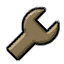

Icône:
Type: Défensif
Point de vie: 125/(+)185
Vitesse: 100%
Meet the EngineerUn aimable Texan provenant de Bee Cave, avec une voix douce et un don pour la mécanique, L'Engineer se spécialise dans la constructions de différentes machine pour aidez ses coéquipier, étant une classe défensive, l'Engineer évite de s'engager directement dans les combats et prend une approche plus stratégique, L'Engineer ne vas pas vers les enemies, les enemies viens vers lui.
Comparé au autre classes du jeu, L'Engineer possède 2 "armes" additionelle qui sont plutôt des outils indispensable dans son gameplay; il s'agit de sont PDA de construction et PDA de destructio respectivement, ces deux outils permet la construction/destruction de machine qui très important dans le rôle de l'Engineer.
L'Engineer possède 125 PV, une vitesse moyenne, le rendant très vulnérable contre n'importe qui et peut facilement être encerclé, heureusement L'Engineer n'est pas sans défense non plus, son arme primaire est un fusil à pompe, son arme secondaire un pistolet, et son arme de mélée est une Clé a molette, cette dernière lui permet de construire et amélioré ses machines et ceux des Engineer alliés.
Les machine (aussi connu sous le nom de "batiment") sont des engins immobile qui permette d'aidez l'équipe ou (dans le cas de la mitrailleuse) de rendre la vie de l'équipe adverse un sacrée enfer. Les batiments peuvent être détruit par les enemies (et même saboté par les Spies enemies) et doivent être maintenue par un Engineer non seulement car il doit les réparé, mais aussi les amélioré (et dans le cas de la mitrailleuse, de remplir les munitions).
Mitrailleuse:La Mitrailleuse apparait comme